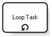

They represent the work performed in a business process and are drawn as a rounded rectangle. An activity usually takes a certain time to be run and it will involve one or more resources from the organization. In addition, it will usually require a certain type of input data and will produce some type of output. Activities are classified as atomic or compound. Atomic activities, which are called tasks, are the lowest level of detail represented in the diagram. Compound activities are called sub-processes and encapsulate a greater level of detail of the process. Tasks There are seven types of tasks:
From the business analyst standpoint, the only core task type is None. The other types of tasks are intended for more advanced uses of BPMN. Behavior When the process flow reaches a task, a new instance of this task is generated. It remains in “list” status until all the requirements defined, such as data input, are met. When this happens, the task is moved to an “active” status. Looping This is another type of behavior that can be specified for a task. It allows defining a loop condition, without the need to include it explicitly in the diagram. The operation depends on Loop Type chosen in the property of the same name. Standard Task When a task is assigned a loop condition, it is represented as shown below:  There are two variants of looping:
The specification of attributes over the task makes it possible to set the maximum number of loops. When this maximum number of loops is reached, it will end even when the condition is still met. Multi-instance tasks This type of behavior determines the number of times that a task will be performed. The condition is checked once and returns the number of instances that must be created. These instances can be executed in parallel or in sequence depending on the task attributes which are not visible in the diagram. In addition, attributes can be used to specify how these tasks converge after they are performed. The possible values are None, One, All or Complex and they are equal to using Gateways (read Gateways). The tasks defined for this type of behavior are represented with three vertical lines in the lower half as shown below: Sub-processes There are two graphical representations:
The figure below shows both types of sub-processes: In addition, BPMN also makes another classification of sub-processes:
Just like with tasks, the parent process will connect to the sub-process with paths towards the boundary of the sub-process symbol. However, for expanded sub-processes, Start Events can be placed on the boundary of the sub-process. In this way, the parent process will connect different paths to each one of these events. Once again, just as it happens with tasks, every time that the flow reaches a sub-process a new instance of the process is created. Go to the main article - Return to the previous section - Go to the next section |
| Backlinks | ||
| Toc:GeneXus BPM Suite | Introduction to BPMN | |
| Introduction to BPMN - Events | Introduction to BPMN - Overview | Introduction to BPMN - Process Categories |